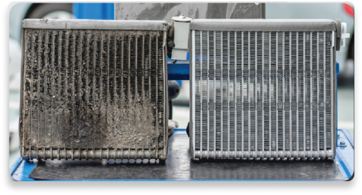
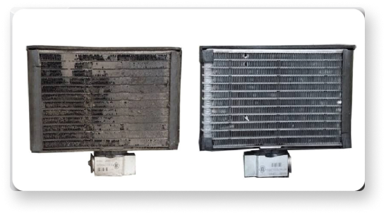
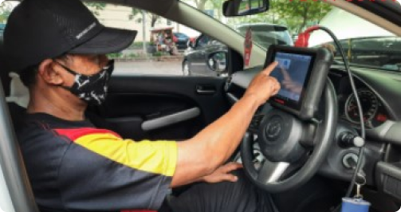

service ac mobil
terbaik
by dokter mobil


service ac mobil
terbaik
by dokter mobil
perjalanan kamu tidak nyaman
karena ac mobil bau apek dan
tidak dingin?

service ac dokter mobil membuat nyaman saat
berkendara di setiap perjalanan anda
jangan abaikan kabin anda bau karena ac mobil
kalian
kenyamanan perjalanan
Setelah Service AC Dokter Mobil
keluhan AC mobil bau dan tidak
dingin lagi hilang.
anda akan merasakan seperti AC
Mobil baru lagi ..
Suasana Kabin nyaman perjalanan
pasti aman
bengkelnya para artis indonesia
banyak artis indonesia percaya dokter mobil
dengan alat yang canggih dan mekanik
profesional.
pengerjaan service ac tanpa ribet membongkar
pekerjaan cepat tapi terjaga kerapian
pengerjaan.
jangan khawatir untuk harga
karena dokter mobil lagi memberikan potongan
harga dari
sekarang hanya
apa saja yang kalian dapat?
1. cuci evaporator
Sirkulasi AC Mobil Menjadi
lancar, Sehingga suhu udara
di dalam kabin menjadi
nyaman.
2. cuci kondensor
untuk membuang panas dan agar
Pembuangan ini terjadi pada saat
proses perubahan freon dari wujud
gas hingga menjadi cair
3. general check up

Untuk mengetahui kondisi
kendaraan mobil anda, pengecekan
di 32 titik intim pada mobil agar
semua kondisi mobil terjaga.
ayo segera reservasi
potongan hanya berlaku jika kalian
menghubungi nomor dibawah ini!!
atau klik tombol di atas ini
apapun mobil nya dokter
mobil pasti beres!!